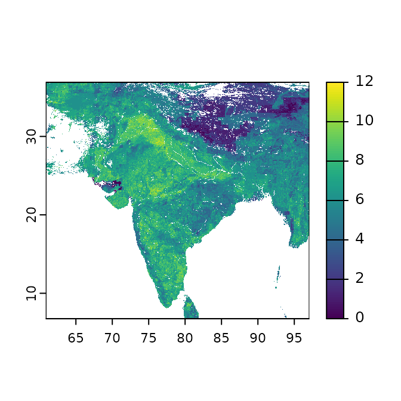

An Example ELSA Workflow
elsaFunctions.RmdOverview
Get started
# load packages
library(elsaFunctions)
library(prioritizr)
library(dplyr)
library(ggplot2)
library(sf)
library(terra)
# set seed for reproducibility
set.seed(500)
# create boundary for Nepal
boundary <- make_boundary(
boundary_in = boundary_dat,
iso3 = "NPL",
iso3_column = "iso3cd"
)
ggplot() + geom_sf(data = boundary) 
# create custom projection and apply it to boundary
wkt <- make_custom_projection(boundary = boundary, iso3 = "NPL")
boundary_proj <- sf::st_transform(boundary, crs = sf::st_crs(wkt))
# alternative
boundary_proj2 <- make_boundary(
boundary_in = boundary_dat,
iso3 = "NPL",
iso3_column = "iso3cd",
do_project = TRUE
)
# make planning units
pus <- make_planning_units(boundary_proj = boundary_proj,
pu_size = NULL,
pu_threshold = 8.5e5,
limit_to_mainland = FALSE)
#> [1] "The current number of planning units is: 3743382"
#> [1] "The current number of planning units is: 2396805"
#> [1] "The current number of planning units is: 1665187"
#> [1] "The current number of planning units is: 1223941"
#> [1] "The current number of planning units is: 741036"
terra::plot(pus)
# get feature data
wad_dat <- get_wad_data()
terra::plot(wad_dat)
# crop and normalise data
wadOut <- make_normalised_raster(raster_in = wad_dat,
pus = pus,
iso3 = "NPL")
terra::plot(wadOut)